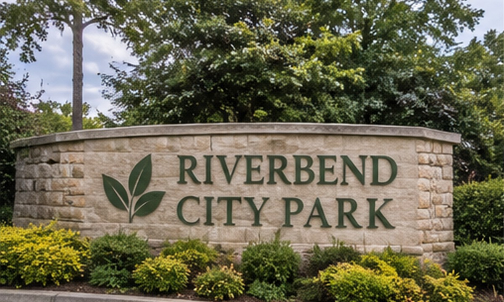
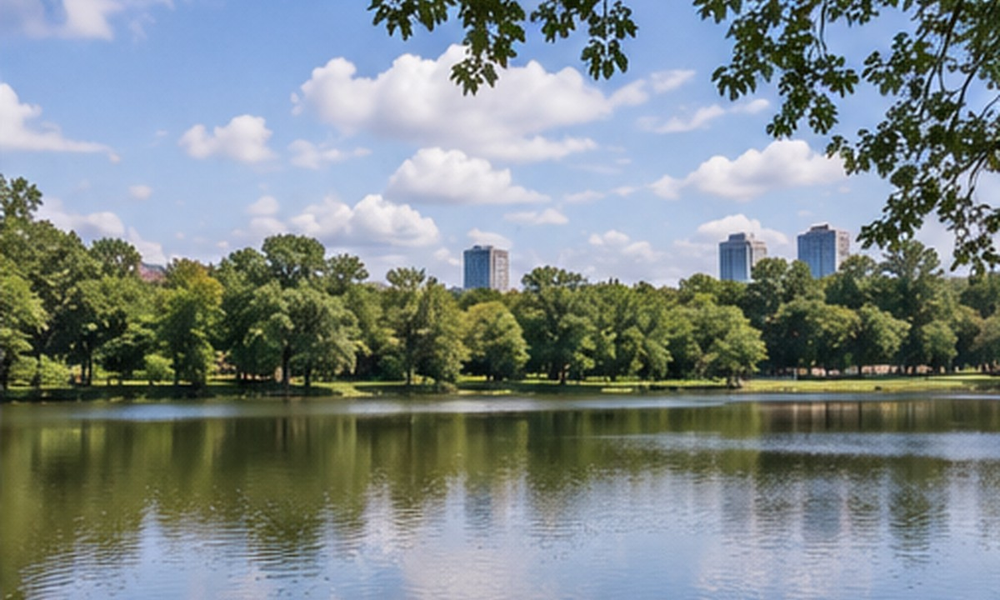

Riverbend City Park
Forty hectares of lake, woodland and open lawn, ten minutes from downtown. Free to enter and open every day of the year.
Open daily 6:00 to 21:00

Plan your visit
- Hours
- 6:00 to 21:00
- Entry
- Free
- Parking
- Lots A and B
- Dogs
- On leash
Start here
The lake is the heart of the park
Most visits start at the water. The paved Lakeside Loop circles it in about half an hour.
Herons fish along the reed beds at dawn, families feed the ducks near the boathouse, and the benches on the south shore catch the last light of the day. Everything around the lake is step-free, so strollers and wheelchairs are welcome.
- Stay on marked paths to protect the reed beds.
- Please carry out what you carry in; bins are at every gate.
- Ring your bell when passing walkers on shared paths.
